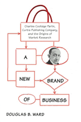

<body bgcolor="#FFFFFF" text="#000000" link="#0000FF" vlink="#CC0000" alink="#CC0000"><center><hr width="350" size="1" align="center" noshade>How a dominant magazine publisher developed the business of market research<hr width="350" size="1" align="center" noshade><p><a href="https://cdcshoppingcart.uchicago.edu/Cart/ChicagoBook.aspx?ISBN=9781439900154&&PRESS=temple" target="_top">Buy this book!</a> | <a href="https://cdcshoppingcart.uchicago.edu/Cart/Cart.aspx?PRESS=temple" target="_top">View Cart</a> | <a href="https://cdcshoppingcart.uchicago.edu/Cart/Cart.aspx?PRESS=temple" target="_top">Check Out</a></p><p></p></center><!--none//--><h1>A New Brand of Business</h1>
<H2>Charles Coolidge Parlin, Curtis Publishing Company, and the Origins of Market Research</H2>
<h3>Douglas B. Ward</h3>
<P>cloth 1-4399-0015-9 $60.50, Nov 09, <FONT COLOR=#990033>Available</FONT>
<BR> 240 pp
5.5x8.25
9&nbsp;tables 2&nbsp;map(s) 10&nbsp;halftones
</P><BLOCKQUOTE><I><p><i>"Ward expertly weaves magazine publishing, advertising, business and marketing, and cultural history together to show that mass communication
history does not happen by itself. He keeps readers turning the page.
</i>A New Brand of Business<i> is a highly interesting book featuring extensive use of primary sources, particularly the Curtis Publishing Company papers,
and his grasp of history during the years of his study is exceptional."</i><BR>&#151<b>Patrick S. Washburn</b>, Ohio University</p></I></BLOCKQUOTE>
<p>Charles Coolidge Parlin was considered by many to be the founder
of market research. Working for the dominant Curtis Publishing
Company, he revolutionized the industry by providing added value to
advertisers through information about the racial, ethnic, and regional
biases of readers and consumers. By maintaining contact with both
businesses and customers, Parlin and Curtis publications were able
to turn consumer wants into corporate profits.</p><p>
In <i>A New Brand of Business</i>, Douglas Ward provides an intriguing
business history that explains how and why Curtis developed its
market research division. He reveals the evolution and impact of
Parlin’s work, which understood how readers and advertisers in
the emerging consumer economy looked at magazines and advertisements.
Ward also examines the cultural and social reasons for
the development and use of market research&#151particularly in regard
to Curtis' readership of upper-income elites. The result weaves the
stories of Parlin and Curtis into the changes taking place in American
business and advertising in the early twentieth century.</p>
<BR>&nbsp;<h2>Excerpt</h2><P>Excerpt available at <a href="http://www.temple.edu/tempress">www.temple.edu/tempress</a></p>
<BR>&nbsp;<h2>Reviews</h2>
<p><i>"</i>A New Brand of Business<i> provides a fascinating look into the early development of marketing research at a key moment in the development of consumer capitalism. Ward's historical research is rigorous and his focus is important and engaging."</i>
<br>&#151<b>Timothy Gibson</b>, George Mason University
<p><i>"Parlin's work at the Curtis Publishing Company and his impact on the marketing and advertising industry (e.g., his development of readership and circulation surveys) are detailed in this well-researched and documented work.... Thus, this well-written volume will appeal to a broader readership than would be typical of a scholarly business history. Summing Up: Recommended" </i>
<br>&#151<b><i>CHOICE</i></b>
<p><i>"Ward does an admirable job taking the reader on a journey through the early development stages of organized scientific marketing research...The book offers the reader the benefit of War's engaging interpretation and focus of his research combined with his rigorous attention to detail... </i>A New Brand of Business<i> is a must read for anyone who would like to have a better grasp of how modern marketing research developed within the chaos and uncertainty of an emerging consumer leviathan." </I></I><br>&#151<b><i>American Journalism</b></i>
<p><i>"[A]n important addition to marketing history. It illuminates the development of market research--not marketing research, an important distinction--and provides a solid model for development of historical research in marketing.... This is an important book worthy of serious attention by scholars and students for understanding the development of important marketing practices. It serves as a positive model for teaching historical research in marketing. There are no reservations in recommending this book and it should be part of every course in marketing history." </I></I><br>&#151<b><i>The Journal of Macromarketing</b></i>
<p><i>"Exhaustively researched... Beautifully written and accessible to a broad audience, Ward’s analysis of [Charles Coolidge] Parlin’s career trajectory at Curtis Publishing and the long-term importance of his market research work is both penetrating and comprehensive." </i><br>&#151<b><i>Enterprise and Society</i></b>
<BR>&nbsp;<h2>Contents</h2><P>
<p>Acknowledgments
<br>Introduction
<br>1. A New Era of Business
<br>2. An Unlikely Leader
<br>3. What Was Commercial Research?
<br>4. Winning over the Skeptics
<br>5. Barbarians, Farmers, and Consumers
<br>6. Readers as Consumers
<br>7. Chasing the Consumer, Protecting the Company
<br>8. The Legacy of Commercial Research
<br>Epilogue
<br>Notes
<br>Index
</P><BR>&nbsp;<H2>About the Author(s)</H2>
<table><tr><td valign="top"><img src="/tempress/authors/2028_au1.gif" height="90" width="75"></td><td width="100%" valign="middle"><p><b>Douglas B. Ward</b> is Assistant Professor in the William Allen White School of Journalism and Mass Communications at the University of Kansas. He was formerly an editor on the business desk at <i>The New York Times</i>.</P></td></tr></table>
<BR><H2>Subject Categories</H2>
<p><A HREF="/tempress/business.html" TARGET="_top">Business/Economics</a>
<BR><A HREF="/tempress/mass_media.html" TARGET="_top">Mass Media and Communications</a>
<BR><A HREF="/tempress/history.html" TARGET="_top">History</a>
</p>
<p align="center"><a href="https://cdcshoppingcart.uchicago.edu/Cart/ChicagoBook.aspx?ISBN=9781439900154&&PRESS=temple" target="_top">Buy this book!</a> | <a href="https://cdcshoppingcart.uchicago.edu/Cart/Cart.aspx?PRESS=temple" target="_top">View Cart</a> | <a href="https://cdcshoppingcart.uchicago.edu/Cart/Cart.aspx?PRESS=temple" target="_top">Check Out</a></p><p><font face="Arial" size="1"><a href="copyright.html" onMouseOver="window.status='Web Copyright Policy';return true;" onMouseOut="window.status=''" title="Web Copyright Policy">&copy;</a> 2015 <a href="http://www.temple.edu" target="new" onMouseOver="window.status='Link to Temple University home page';return true;" onMouseOut="window.status=''" title="Link to Temple University home page">Temple University</a>. All Rights Reserved. http://www.temple.edu/tempress/titles/2028_reg.html</font></p>